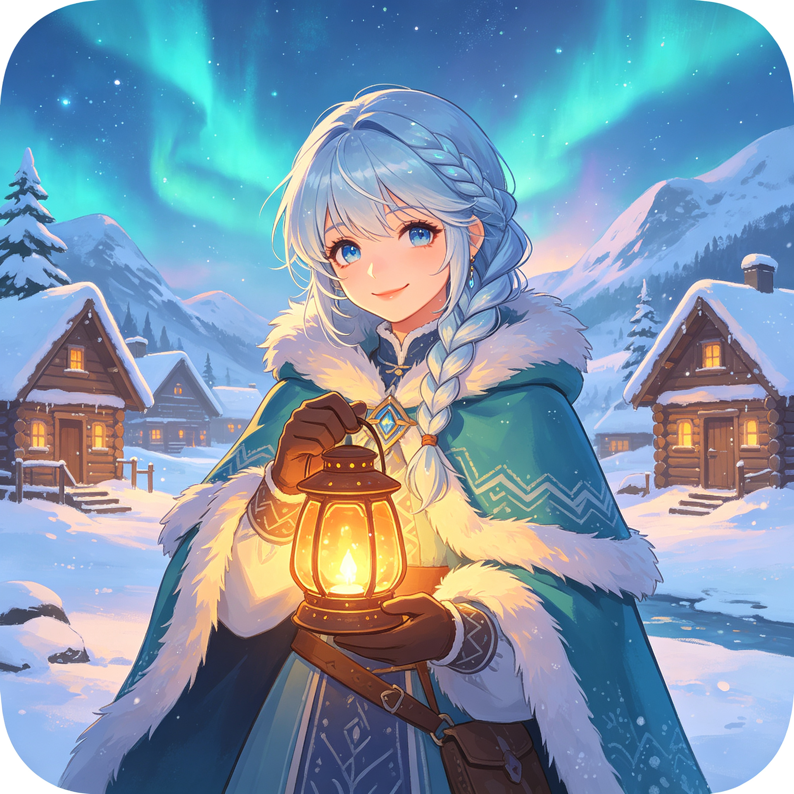
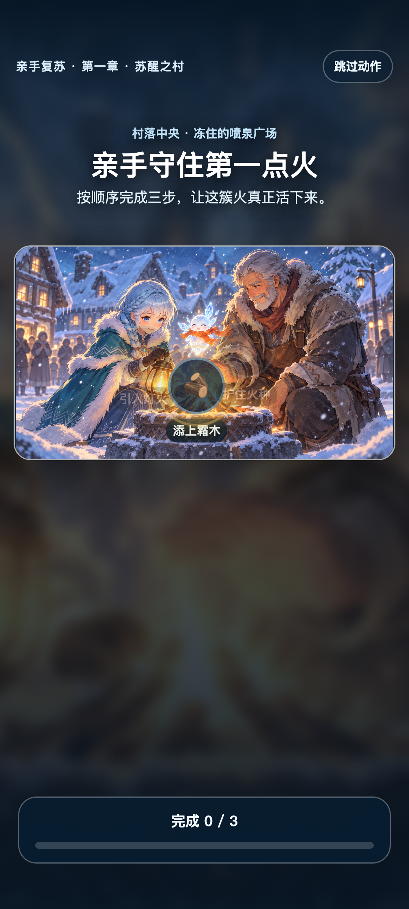

苏醒之村
重燃广场、修补猎人小屋、架起村门木桥。
点按生成器、合并物资，也先听听村民为什么需要帮助。六章 24 段原创剧情已经贯通：有声序章、冈特踏雪来访、亲手点燃第一堆火、为村厅选灯，一步步解开祖父风灯的秘密。
适用于 Android 8.0 及以上的 ARM64 手机。首次安装时，系统可能要求允许“安装未知应用”。


六章主线
重燃广场、修补猎人小屋、架起村门木桥。
让烘焙坊、裁缝铺和破冰码头重新营业。
修缮大厅与穹顶，最终点燃永暖圣火。
点亮灯塔、修好渡轮，让第一艘归乡船穿过浮冰。
寻回驿站和藏书窟，沿着祖父手记找回被冰封的记忆。
筑起四方暖坛、叩开霜心之门，做出提灯人最后的选择。
安装与更新
剧情、数值、美术和音频更新会在启动时后台下载，经大小、SHA-256 与压缩包路径校验后，于下次启动生效。原生功能变化才需要重新下载 APK。
最新正式版
基础 APK 包含合并主循环、剧情化村民请求、紧凑任务架、有声序章、商店、图鉴和爽玩模式；六章故事可通过经完整性校验的内容包持续更新。